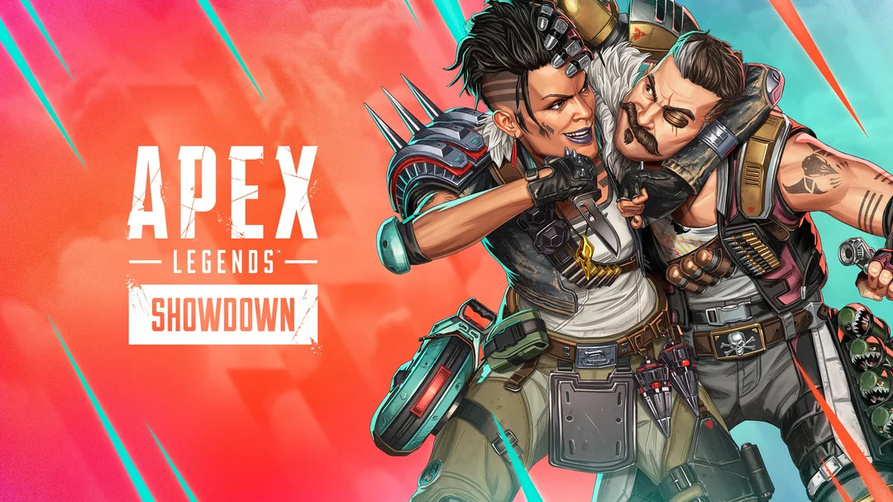
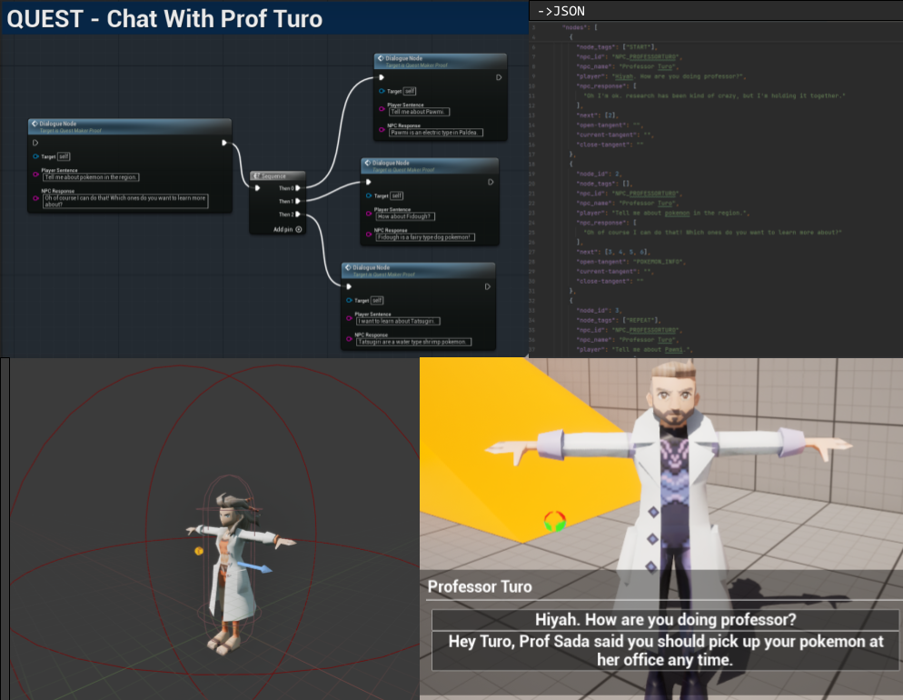
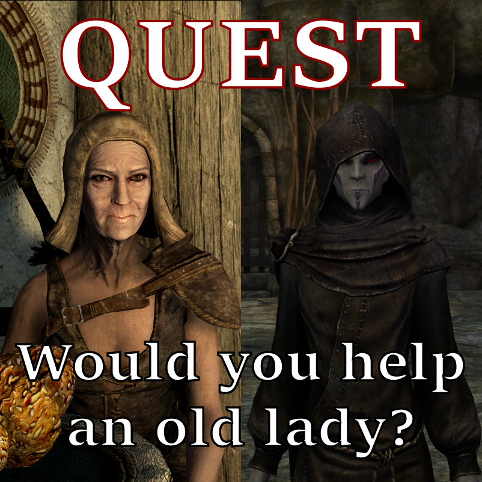
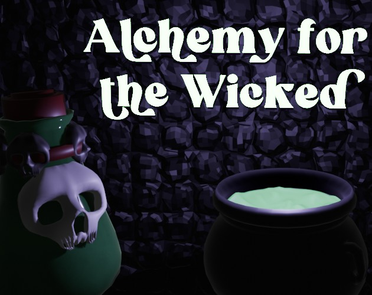
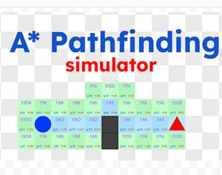
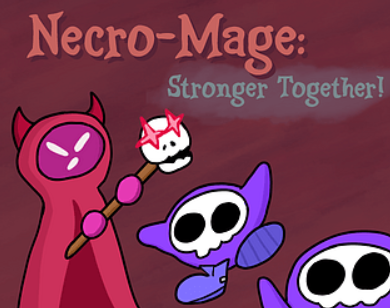
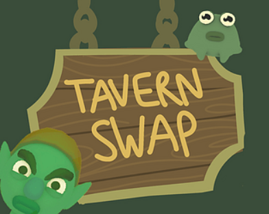
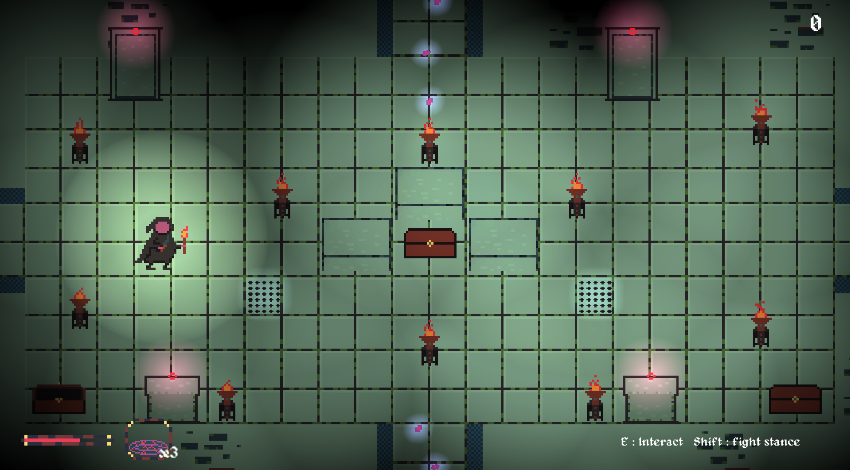

Jake Ozer
Hey! I'm Jake.
Former Intern at EA - Respawn Entertainment
BS in Computer Science - Illinois State
President of
Illinois State University's Game Dev Club
.
Want a quick demo of my latest projects? Check out my portfolio reels below.
Projects
*click on links to see more info*

Apex Legends: Season 26+27
As a Technical Game Designer Intern at Respawn Entertainment in the Summer of 2025,
I contributed to designing, prototyping, and scripting new mechanics/features into
Season 26 of Apex Legends' Wildcard Gamemode.
(More details on my involevement to be released in the future, due to NDA)

Unreal Engine Quest System + Dialogue Tool (In Progress)
A custom quest system and dialogue editor built in Unreal Engine that enables designers to create flexible,
branching dialogue trees tied to overarching quest logic. The tool supports interconnected conversations across multiple
NPCs, allowing player choices and narrative states to persist and influence quests at a system level.
The in-game dialogue/quest backend system was built entirely with C++, while UI and high level scripting was done with blueprints.
The tool portion of the project is still in development, and this page will be updated when its complete.

Would You Help an Old Lady? - Skyrim SE Quest Mod
A mod for Skyrim Special Edition that adds a custom made quest to the game involving
the rescue of an old woman afflicted by a curse. Developed over the course of a few
months as a hobby project by myself, the quest was written and voice acted entirely
by me.
The highlights of my work on this project include my narrative design in writing the
quest, familiarizing myself with AAA development and level design tools, and being
able to program quest encounters in Papyrus (Bethesda's proprietary scripting language).
This mod also stands as one of my most popular projects, accruing 4000+ downloads with
more coming each passing day.

Alchemy for the Wicked
A first person puzzle game about brewing poisons for the evil denizens of a fantasy
world. Created in one week for game dev club's Summer 2024 game jam with a team of four,
I served as the team's lead programmer.
My biggest highlights on this project included creating a clean and practical ingredient
system for the backend, developing the in-game alchemy book UI/camera system, and
designing the main gameplay loop.

A* Pathfinding Simulator
An algorithmic simulator demonstrating how the A* pathfinding algorithm acts on a
grid based graph. This was created as a hobby project by myself due to an interest
in the algorithm after completing a 1600 word research paper about it in my Data
Structures and Algorithms course.
The big focuses for this project were creating a clean user interface and allowing
for animations to be paused/slowed down in an effort to make this a useful and
satisfying educational tool.

Necro-Mage: Stronger Together!
An action game in which you are able to defeat enemies and resurrect them to fight
by your side. The project was created in the span of one week for game dev club's
Winter 2023 game jam. I served as a programmer/designer for a small group consisting
of myself and three others.
My most notable contributions to the game were developing the AI targeting system,
engineering the level generation, designing the combat encounters, and implementing
all of the art and animations created by our artist.

Tavern Swap!
A 3D dialogue driven game where you choose your own adventure and swap between
characters as you do so. This game was made in 48 hours for the GMTK 2023 jam on a
team with two other people (an artist and musician).
I was in charge of building/programming the whole game in engine using the assets
that my team members created, as well as designing and writing the narrative encounters.

The Crypts of Severus
A fantasy dungeon crawler where only when you reach the end of the dungeon, enemies
will attack. This game was initially made in one week for game dev club's Summer 2023
jam, but was later improved upon over the rest of that summer. I did everything on this
project except for the music.
My main accomplishments with this game included the lighting design, implementation
of satisfying juice and crunch mechanics, designing varying enemy types and boss
encounters, and programming the backend for the in game enchantment system.